[!NOTE] This document will be updated periodically.
run hcp with ocp-v
Continuing from the previous MetalLB on 2nic testing, we will explore how to expose the host control plane’s hosted cluster through a second network.
In this test, we will activate a host control plane based on ocp-v to test its functionality.
The most important aspect is to analyze how the ingress network traffic path looks.
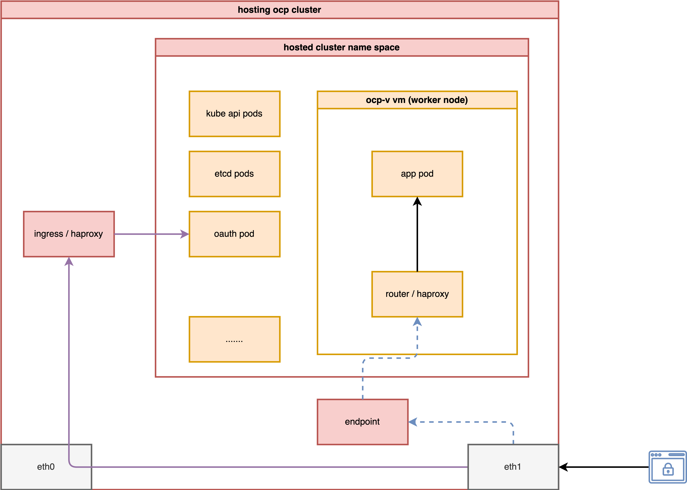
install metalLB
The MetalLB settings are the same as in the previous document; you can refer to it here.
install ocp-v
We need ocp-v to provide VMs, which will serve as worker nodes for the hosted cluster.
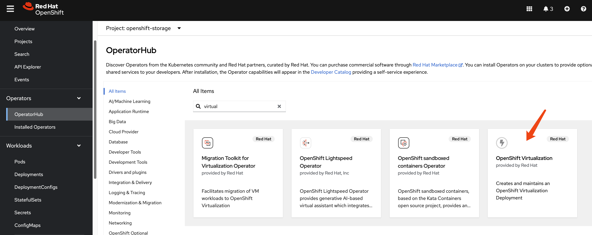
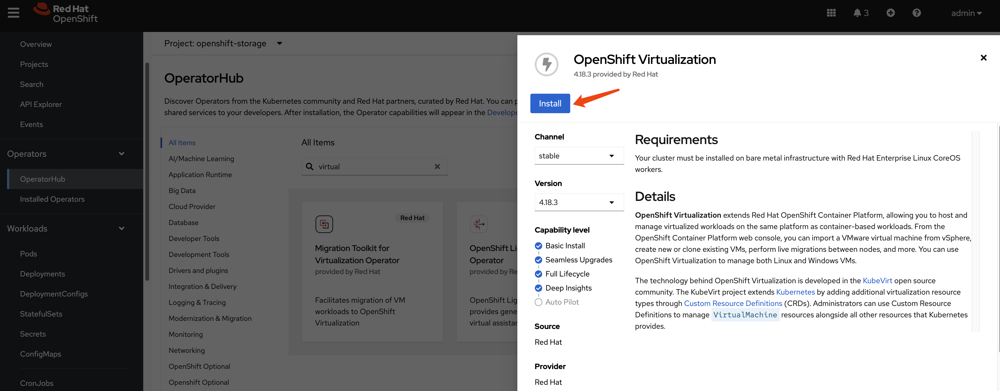
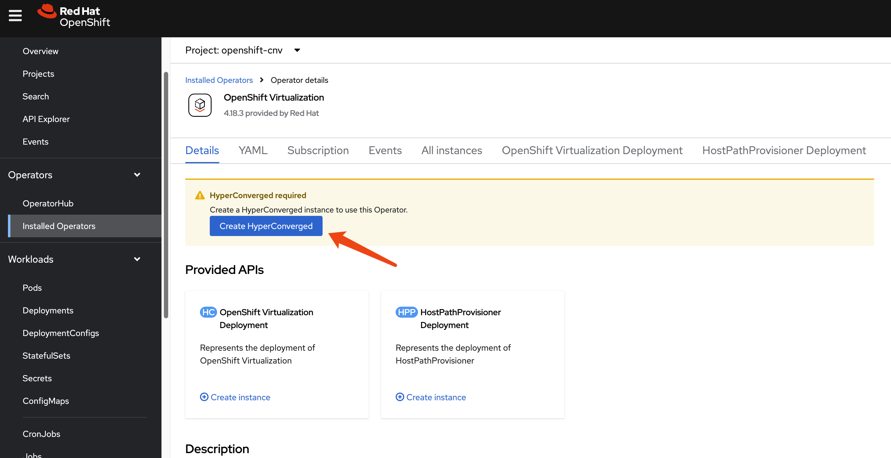
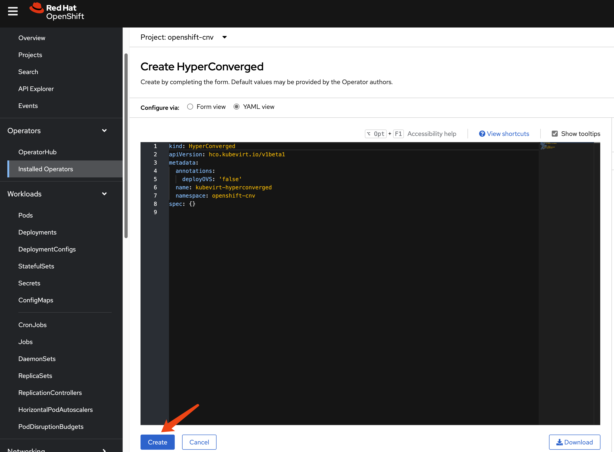
Because we have customized NFS storage, we need to ensure CNV recognizes it.
cat << EOF > $BASE_DIR/data/install/cnv-sp.yaml
apiVersion: cdi.kubevirt.io/v1beta1
kind: StorageProfile
metadata:
name: nfs-dynamic
spec:
claimPropertySets:
- accessModes:
- ReadWriteMany
volumeMode: Filesystem
EOF
oc apply -f $BASE_DIR/data/install/cnv-sp.yamlinstall multicluster engine Operator
We do not need ACM; MCE is sufficient for HCP over OCP-V, as MCE is a subset of ACM.
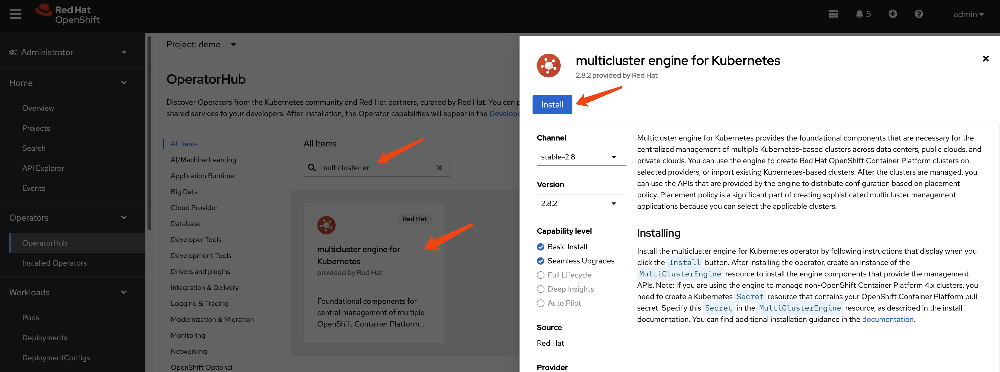
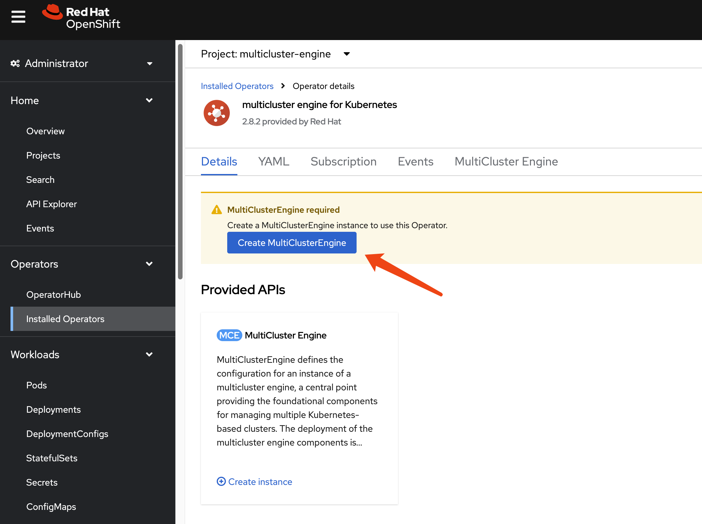
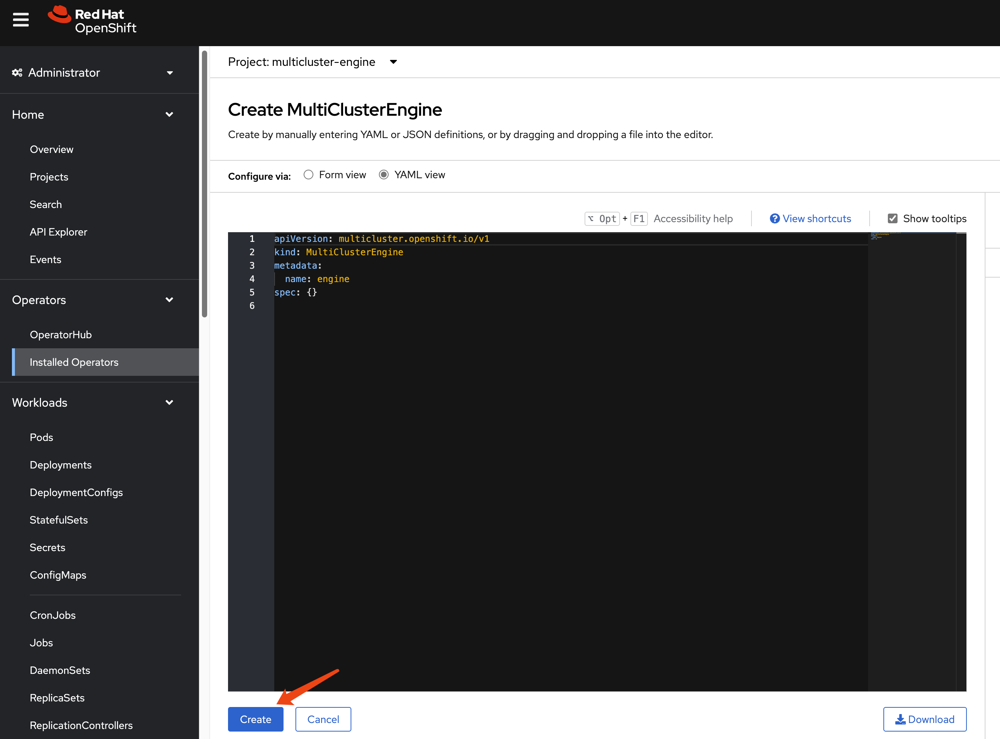
After enabling MCE, wait approximately 10 minutes for the necessary pods to install. Once complete, the new web UI will be accessible.
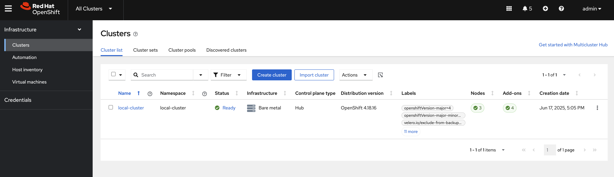
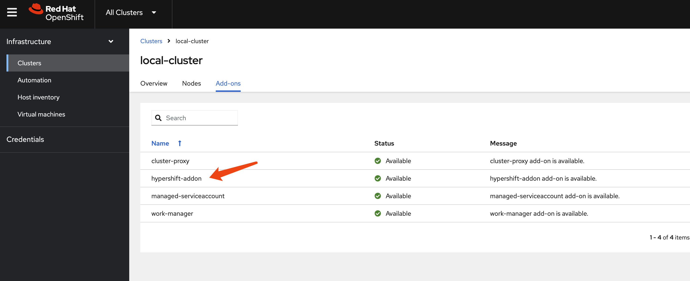
hcp
Okay, let’s start with HCP.
This time, we do not need to patch the ingress, as MetalLB will directly redirect traffic from the node to the hosted cluster.
# oc patch ingresscontroller -n openshift-ingress-operator default \
# --type=json \
# -p '[{ "op": "add", "path": "/spec/routeAdmission", "value": {"wildcardPolicy":
# "WildcardsAllowed"}}]'Next, verify your DNS settings so the hosted cluster’s domain name can be resolved. Set the DNS record:
*.apps.demo-01-hcp.wzhlab.top->192.168.77.202
using cli
You can use the HCP CLI to create the hosted
cluster.
First, ensure you have the hcp CLI tool
installed on your local machine.
oc get ConsoleCLIDownload hcp-cli-download -o json | jq -r ".spec"
# {
# "description": "With the Hosted Control Plane command line interface, you can create and manage OpenShift hosted clusters.\n",
# "displayName": "hcp - Hosted Control Plane Command Line Interface (CLI)",
# "links": [
# {
# "href": "https://hcp-cli-download-multicluster-engine.apps.demo-01-rhsys.wzhlab.top/linux/amd64/hcp.tar.gz",
# "text": "Download hcp CLI for Linux for x86_64"
# },
# {
# "href": "https://hcp-cli-download-multicluster-engine.apps.demo-01-rhsys.wzhlab.top/darwin/amd64/hcp.tar.gz",
# "text": "Download hcp CLI for Mac for x86_64"
# },
# {
# "href": "https://hcp-cli-download-multicluster-engine.apps.demo-01-rhsys.wzhlab.top/windows/amd64/hcp.tar.gz",
# "text": "Download hcp CLI for Windows for x86_64"
# },
# {
# "href": "https://hcp-cli-download-multicluster-engine.apps.demo-01-rhsys.wzhlab.top/linux/arm64/hcp.tar.gz",
# "text": "Download hcp CLI for Linux for ARM 64"
# },
# {
# "href": "https://hcp-cli-download-multicluster-engine.apps.demo-01-rhsys.wzhlab.top/darwin/arm64/hcp.tar.gz",
# "text": "Download hcp CLI for Mac for ARM 64"
# },
# {
# "href": "https://hcp-cli-download-multicluster-engine.apps.demo-01-rhsys.wzhlab.top/linux/ppc64/hcp.tar.gz",
# "text": "Download hcp CLI for Linux for IBM Power"
# },
# {
# "href": "https://hcp-cli-download-multicluster-engine.apps.demo-01-rhsys.wzhlab.top/linux/ppc64le/hcp.tar.gz",
# "text": "Download hcp CLI for Linux for IBM Power, little endian"
# },
# {
# "href": "https://hcp-cli-download-multicluster-engine.apps.demo-01-rhsys.wzhlab.top/linux/s390x/hcp.tar.gz",
# "text": "Download hcp CLI for Linux for IBM Z"
# }
# ]
# }
wget --no-check-certificate https://hcp-cli-download-multicluster-engine.apps.demo-01-rhsys.wzhlab.top/linux/amd64/hcp.tar.gz
tar -xzf hcp.tar.gz -C $HOME/.local/bin/Next, create the hosted cluster using the following parameters:
oc get secret -n openshift-config pull-secret -o template='{{index .data ".dockerconfigjson"}}' | base64 --decode > ~/pull-secret.json
hosted_cluster_name=demo-01-hcp
worker_count=1
value_for_memory=16Gi
value_for_cpu=8
var_release_image=quay.io/openshift-release-dev/ocp-release:4.18.19-multi
cluster_cidr="10.136.0.0/14"
service_cidr="172.31.0.0/16"
basedomain="wzhlab.top"
hcp create cluster kubevirt \
--name $hosted_cluster_name \
--node-pool-replicas $worker_count \
--pull-secret ~/pull-secret.json \
--memory $value_for_memory \
--cores $value_for_cpu \
--release-image $var_release_image \
--cluster-cidr ${cluster_cidr} \
--service-cidr ${service_cidr} \
--base-domain ${basedomain} \
--control-plane-availability-policy SingleReplica \
--infra-availability-policy SingleReplica
hcp create kubeconfig --name $hosted_cluster_name > kubeconfig.yaml
# hcp destroy cluster kubevirt --name wzh-01
oc --kubeconfig=kubeconfig.yaml get pod -A | grep ingress
# openshift-ingress-canary ingress-canary-bsf5b 1/1 Running 0 78m
# openshift-ingress router-default-7dd6bbdd-6sw8q 1/1 Running 0 78msetup metalLB
The hosted cluster cannot fully initialize because the ingress component fails to start. To resolve this, we need to modify the MetalLB configuration.
var_http_port=`oc --kubeconfig=kubeconfig.yaml get services \
-n openshift-ingress router-nodeport-default \
-o jsonpath='{.spec.ports[?(@.name=="http")].nodePort}'`
var_https_port=`oc --kubeconfig=kubeconfig.yaml get services \
-n openshift-ingress router-nodeport-default \
-o jsonpath='{.spec.ports[?(@.name=="https")].nodePort}'`
echo $var_http_port
# 32062
echo $var_https_port
# 32482
cat << EOF > metallb-ingress.yaml
apiVersion: v1
kind: Service
metadata:
labels:
app: $hosted_cluster_name
name: $hosted_cluster_name-apps
namespace: clusters-$hosted_cluster_name
annotations:
# metallb.universe.tf/ip-address-pool: hcp-pool
metallb.io/ip-allocated-from-pool: hcp-pool
spec:
ports:
- name: https-443
port: 443
protocol: TCP
targetPort: $var_https_port
- name: http-80
port: 80
protocol: TCP
targetPort: $var_http_port
selector:
kubevirt.io: virt-launcher
type: LoadBalancer
EOF
oc apply -f metallb-ingress.yaml
oc -n clusters-$hosted_cluster_name get service $hosted_cluster_name-apps
# NAME TYPE CLUSTER-IP EXTERNAL-IP PORT(S) AGE
# demo-01-hcp-apps LoadBalancer 172.22.235.208 192.168.77.203 443:30324/TCP,80:32522/TCP 6s
# oc -n clusters-$hosted_cluster_name get service $hosted_cluster_name-apps \
# -o jsonpath='{.status.loadBalancer.ingress[0].ip}'After a short wait, the hosted cluster should be ready. To understand the ingress traffic path, observe the CLI output below. The traffic hits iptables, forwards to OVN, and then a rule/policy within OVN forwards it to the VM.
# on hosting worker node
iptables -L -v -n -t nat | grep 172.22.235.208
# 0 0 DNAT 6 -- * * 0.0.0.0/0 192.168.77.203 tcp dpt:80 to:172.22.235.208:80
# 0 0 DNAT 6 -- * * 0.0.0.0/0 192.168.77.203 tcp dpt:443 to:172.22.235.208:443
# 0 0 DNAT 6 -- * * 0.0.0.0/0 0.0.0.0/0 ADDRTYPE match dst-type LOCAL tcp dpt:32522 to:172.22.235.208:80
# 0 0 DNAT 6 -- * * 0.0.0.0/0 0.0.0.0/0 ADDRTYPE match dst-type LOCAL tcp dpt:30324 to:172.22.235.208:443
# back to helper/station node
oc get vmi -A -o wide
# NAMESPACE NAME AGE PHASE IP NODENAME READY LIVE-MIGRATABLE PAUSED
# clusters-demo-01-hcp demo-01-hcp-f9rmg-kn6lj 58m Running 10.135.0.107 worker-02-demo True True
# check the ip on ovn database
VAR_POD=$(oc get pods -n openshift-ovn-kubernetes -l app=ovnkube-node -o name | sed -n '1p' | awk -F '/' '{print $NF}')
oc exec -it ${VAR_POD} -c ovn-controller -n openshift-ovn-kubernetes -- ovn-nbctl lb-list | grep 172.22.235.208
# 8270a575-1164-4cad-966c-2f48cec8e7c9 Service_clusters tcp 172.22.235.208:443 10.135.0.107:32482
# tcp 172.22.235.208:80 10.135.0.107:32062add htpasswd auth in hosted cluster
Initially, the hosted cluster only has the
kubeadmin user. We will add htpasswd
as an authentication method to access the cluster.
- https://validatedpatterns.io/blog/2024-02-07-hcp-htpasswd-config/
# init the htpasswd file
htpasswd -c -B -b ${BASE_DIR}/data/install/users.htpasswd admin redhat
# add additional user
htpasswd -B -b ${BASE_DIR}/data/install/users.htpasswd user01 redhat
# import the htpasswd file
oc create secret generic htpass-secret-$hosted_cluster_name \
--from-file=htpasswd=${BASE_DIR}/data/install/users.htpasswd \
-n clusters
cat << EOF > ${BASE_DIR}/data/install/oauth.yaml
spec:
configuration:
oauth:
identityProviders:
- name: htpasswd
mappingMethod: claim
type: HTPasswd
htpasswd:
fileData:
name: htpass-secret-$hosted_cluster_name
EOF
# Make sure your kubeconfig points to the MANAGEMENT CLUSTER
oc patch hostedcluster $hosted_cluster_name \
-n clusters \
--type merge \
--patch-file=${BASE_DIR}/data/install/oauth.yaml
oc --kubeconfig=kubeconfig.yaml adm policy add-cluster-role-to-user cluster-admin admin
oc --kubeconfig=kubeconfig.yaml get co
# NAME VERSION AVAILABLE PROGRESSING DEGRADED SINCE MESSAGE
# console 4.18.19 True False False 59m
# csi-snapshot-controller 4.18.19 True False False 73m
# dns 4.18.19 True False False 66m
# image-registry 4.18.19 True False False 66m
# ingress 4.18.19 True False False 66m
# insights 4.18.19 True False False 67m
# kube-apiserver 4.18.19 True False False 74m
# kube-controller-manager 4.18.19 True False False 73m
# kube-scheduler 4.18.19 True False False 73m
# kube-storage-version-migrator 4.18.19 True False False 66m
# monitoring 4.18.19 True False False 65m
# network 4.18.19 True False False 67m
# node-tuning 4.18.19 True False False 68m
# openshift-apiserver 4.18.19 True False False 74m
# openshift-controller-manager 4.18.19 True False False 74m
# openshift-samples 4.18.19 True False False 66m
# operator-lifecycle-manager 4.18.19 True False False 73m
# operator-lifecycle-manager-catalog 4.18.19 True False False 73m
# operator-lifecycle-manager-packageserver 4.18.19 True False False 73m
# service-ca 4.18.19 True False False 67m
# storage 4.18.19 True False False 74mtesting
Finally, let’s test the setup using the web console. Since we
are using a disconnected VM connected only to the second
network, we will use /etc/hosts for domain name
resolution.
cat << EOF >> /etc/hosts
192.168.77.203 console-openshift-console.apps.demo-01-hcp.wzhlab.top
192.168.77.201 oauth-clusters-demo-01-hcp.apps.demo-01-rhsys.wzhlab.top
EOF
cat /etc/hosts
# ......
# 192.168.77.201 console-openshift-console.apps.demo-01-rhsys.wzhlab.top
# 192.168.77.201 oauth-openshift.apps.demo-01-rhsys.wzhlab.top
# 192.168.77.203 console-openshift-console.apps.demo-01-hcp.wzhlab.top
# 192.168.77.201 oauth-clusters-demo-01-hcp.apps.demo-01-rhsys.wzhlab.topFirst, we will test using the CLI.
# testing with curl should work
curl -v --insecure --resolve console-openshift-console.apps.demo-01-hcp.wzhlab.top:443:192.168.77.203 https://console-openshift-console.apps.demo-01-hcp.wzhlab.top/
# * Added console-openshift-console.apps.demo-01-hcp.wzhlab.top:443:192.168.77.203 to DNS cache [42/450]
# * Hostname console-openshift-console.apps.demo-01-hcp.wzhlab.top was found in DNS cache
# * Trying 192.168.77.203:443...
# * Connected to console-openshift-console.apps.demo-01-hcp.wzhlab.top (192.168.77.203) port 443 (#0)
# ......
oc login --insecure-skip-tls-verify=true https://192.168.77.202:6443 -u admin -p redhat
# WARNING: Using insecure TLS client config. Setting this option is not supported!
# Login successful.
# You have access to 63 projects, the list has been suppressed. You can list all projects with 'oc projects'
# Using project "default".
oc get node
# NAME STATUS ROLES AGE VERSION
# demo-01-hcp-f9rmg-kn6lj Ready worker 44m v1.31.9Next, access the VM console and use a browser to reach the hosted cluster’s web console.
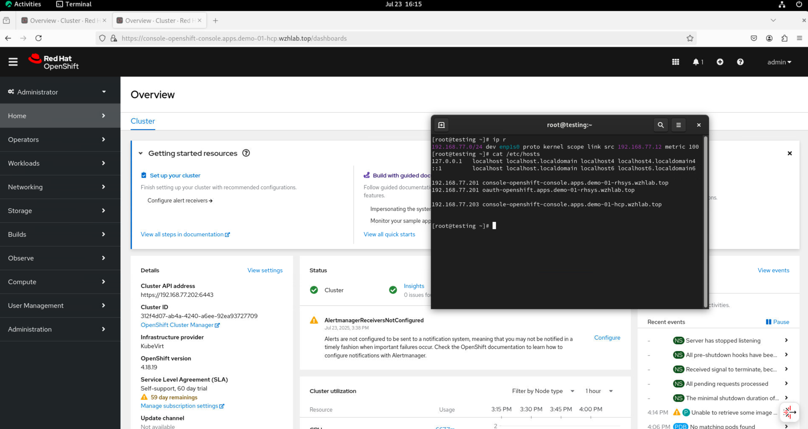
The hosted cluster’s status can also be verified on the MCE console.
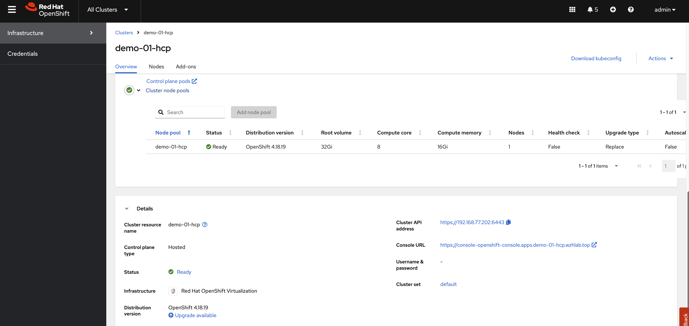